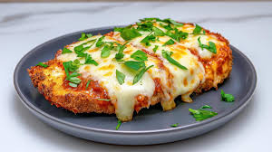
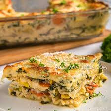
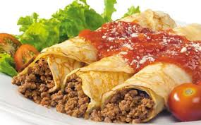

Voltar para a página principal
Almoço
Segue abaixo sugestões para o seu almoço mais especial
-
Frango à Parmegiana

Ingredientes
- 4 filés de frango (Aprox 150 g cada)
- 8 g de sal
- 4 g de pimenta-do-reino
- 100 g de farinha de trigo
- 2 ovos (Aprox 100 g)
- 150 g de farinha de rosca
- 500 ml de óleo para fritar
- 300 ml de molho de tomate
- 200 g de muçarela fatiada
- 50 g de parmesão ralado
Modo de preparo
- Tempere os filés com sal e pimenta
- Passe na farinha de trigo, depois nos ovos batidos e na
farinha de rosca
- Frite em óleo quente até dourar
- Coloque em refratário, cubra com molho e queijos
- Leve ao forno a 200°C por 15 minutos para gratinar
-
Lasanha vegana

Ingredientes
- Massa para lasanha (pré-cozida)
- 1 maço de espinafre, lavado, aferventado, bem picadinho
e bem espremido
- 2 cenouras raladas
- 1 abobrinha menina ralada
- 1 cebola grande
- 3 dentes de alho
- 2 folhas de louro
- 3 cravos
- 2 colheres de (sopa) de manteiga
- 3 colheres de (sopa) de óleo
- 1 litro de leite
- 2 colheres de (sopa) de farinha de trigo
- 1 lata (ou caixinha) de creme de leite
- 200 gr de queijo mussarela
- sal a gosto
Modo de preparo
- Refogar o espinafre com óleo e alho e sal a gosto e reservar
- Refogar as cenouras com óleo e alho e sal a gosto e reservar
- Refogar a abobrinha com óleo e alho e sal a gosto e reservar
- Colocar o leite para ferver em fogo baixo com a cebola
cortada em 4 partes, a manteiga, o louro, o cravo e sal a gosto
- Após ferver, em fogo baixo, por aproximadamente 5 minutos
, retirar o louro, os cravos e a cebola, colocar a farinha de trigo
, dissolvida em água e deixe cozinhar mexendo bem, fazendo
assim o molho branco
- Colocar o creme de leite e desligar o fogo
- Se o molho branco ficou empelotado, coloque no liquidificador
, bata e ficará maravilhoso
- Montar a lasanha começando com molho branco, massa
, espinafre, queijo, molho branco
, massa, abobrinha, molho branco, massa, cenoura, molho branco
, queijo e por aí vai, até acabar os ingredientes
- Leve ao forno por uns 40 minutos ou até que borbulhe
-
Panqueca de Carne

Ingredientes
- 2 ovos (Aprox 100 g)
- 300 ml de leite
- 180 g de farinha de trigo
- 5 g de sal
- 20 ml de óleo
- 500 g de carne moída
- 100 g de cebola picada
- 500 ml de molho de tomate
- 200 g de muçarela
Modo de preparo
- Bata ovos, leite, farinha, sal e óleo até formar massa líquida
- Faça discos finos em frigideira antiaderente
- Refogue a carne com cebola e tempere
- Recheie as panquecas e enrole
- Cubra com molho e muçarela
- Leve ao forno a 200°C por 20 minutos